Message from The MUN Co-Ordinator

Mrs. Amrita Bhaduri
MUN Co-Ordinator - The Bishop's Co-Ed School, Undri: Model United Nations
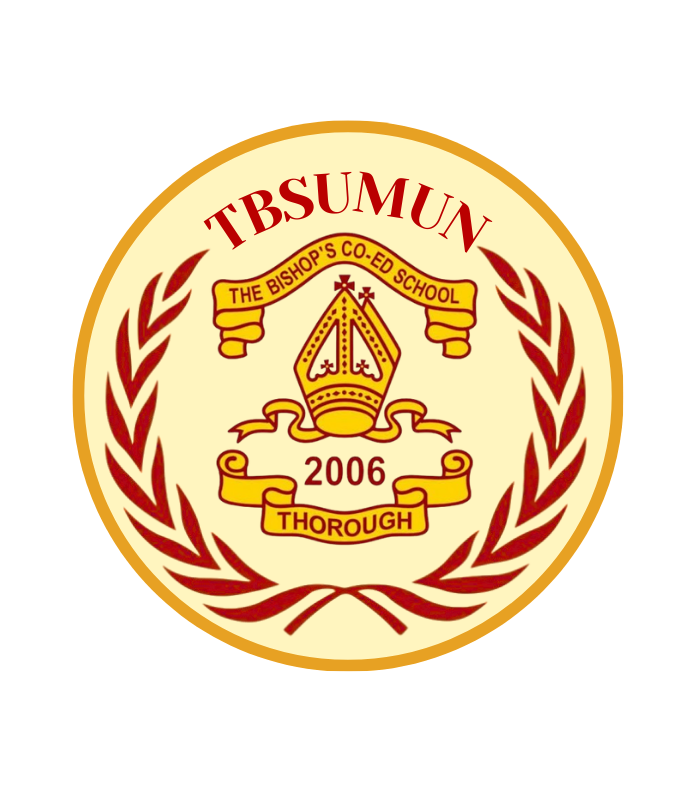
The Bishop's Co-Ed School, Undri
Model United Nations
Debate. Demur. Deliver.
11th & 12th July 2026
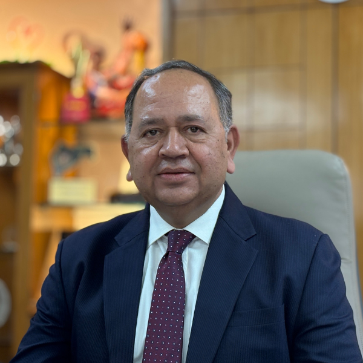
Principal - The Bishop's Co-Ed School, Undri
MUN Co-Ordinator - The Bishop's Co-Ed School, Undri: Model United Nations
The second edition of The Bishop’s Co‑Ed School, Undri Model United Nations builds upon the strong foundation laid by its inaugural conference, which welcomed over 210+ delegates and emerged as a remarkable success. The first edition demonstrated the power of student diplomacy, intellectual curiosity and meaningful dialogue, creating a space where young voices engaged with global issues thoughtfully and confidently. It set a high benchmark, not only in participation but also in the quality of debate, collaboration and leadership displayed across committees.
As the conference returns for its second edition, it marks a fresh beginning shaped by experience and ambition. TBSUMUN 2026 reflects a renewed vision,one that seeks to deepen academic rigour, broaden perspectives and strengthen the culture of constructive discourse established in its debut year. With lessons learned and enthusiasm carried forward, the organising team approaches this edition with greater clarity, innovation and purpose.
This year, the conference looks ahead to welcoming an even higher number of delegates, expanding both its reach and its impact. The aim is not merely growth in numbers, but growth in engagement, diversity of thought and diplomatic excellence. Enhanced committee structures, refined agendas and a stronger emphasis on research and collaboration promise an environment where delegates can challenge ideas, negotiate solutions and develop essential global competencies.
TBSUMUN 2026 therefore stands as more than a continuation, it represents evolution. It carries forward the spirit of its successful first edition while embracing new possibilities, stronger partnerships and a clearer sense of direction. With a renewed vision and an expanding community of delegates, the second edition aspires to inspire thoughtful leadership, responsible dialogue and a lasting commitment to global citizenship.
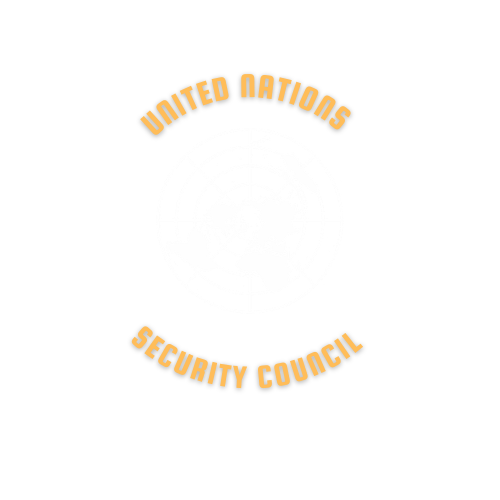
"The Situation in Venezuela and Regional Destabilisation in Latin America."
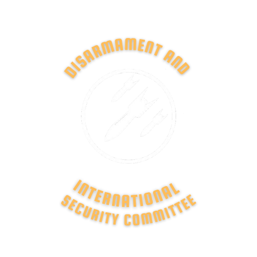
"Addressing the structural inequalities of the NPT and reviewing it with special emphasis on articles 3, 4 and 5."
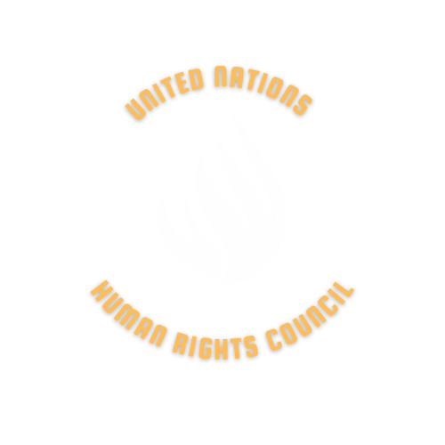
"Establishing universal standards for the prevention of child labour, modern slavery and labour exploitation."
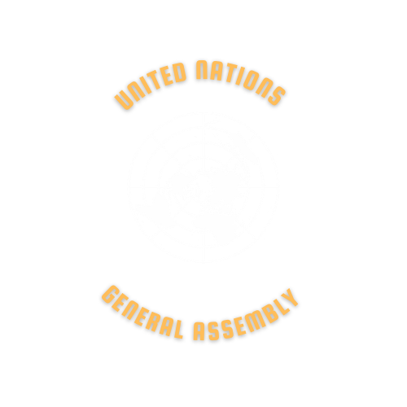
"Addressing emerging global biosecurity challenges posed by unregulated advances in synthetic biology."
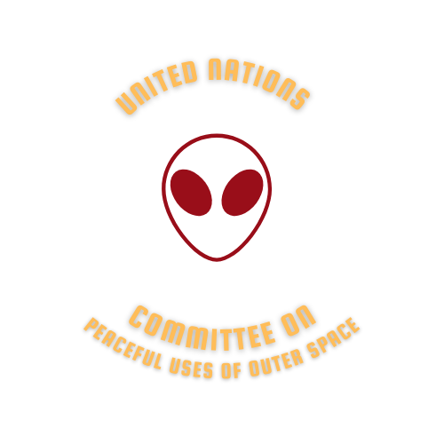
"Reconceptualising international policies for regulating dual - use space technologies to ensure peaceful and sustainable outer space activities."
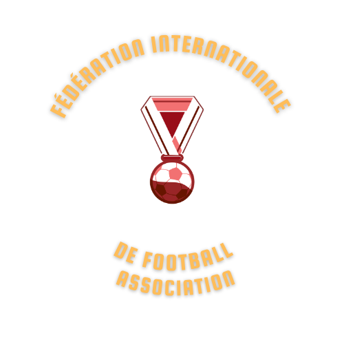
"Leveraging UNODC frameworks to prevent the exploitation, trafficking and abuse of juvenile football players and exploring football as a crime prevention tool."
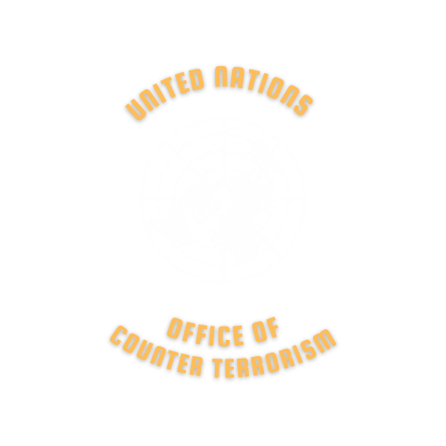
"Combating narcotics trafficking and organised crime originating from the Golden Triangle."
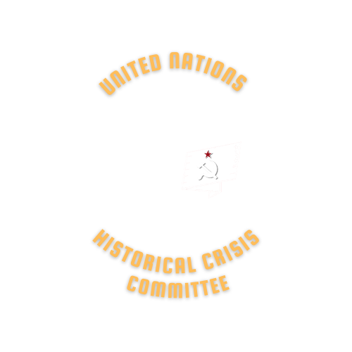
"Deliberation on the Escalating Political and Military Crisis in Vietnam and it's Implications for State Authority, Territorial Control, and International Involvement (1974-1976)"
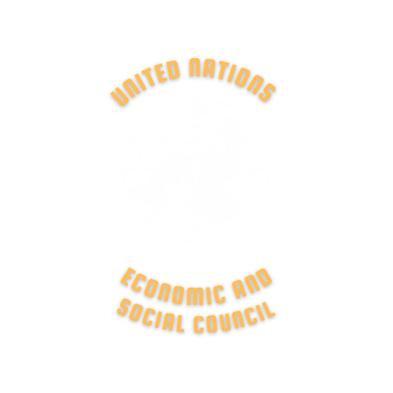
"Bridging the Development Gap Between Developed and Emerging Economies Through Sustainable and Inclusive Growth."
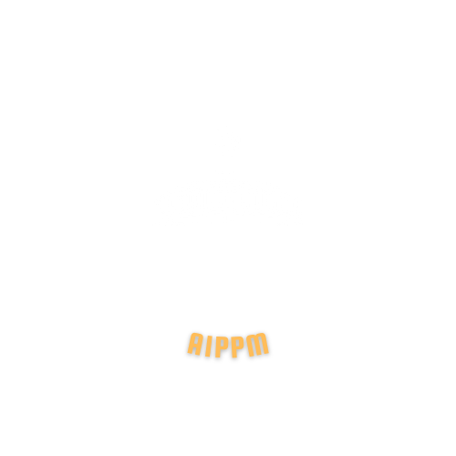
"Deliberation on the balance between National Security, Civil–Military Relations and Freedom of the Press in light of recent controversies surrounding publications by former defence officials and their media coverage."
"Journalism or Photography."
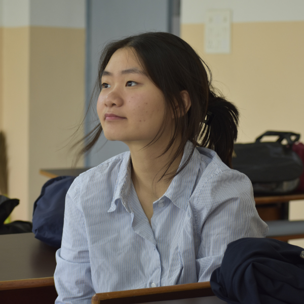
Secretary-General
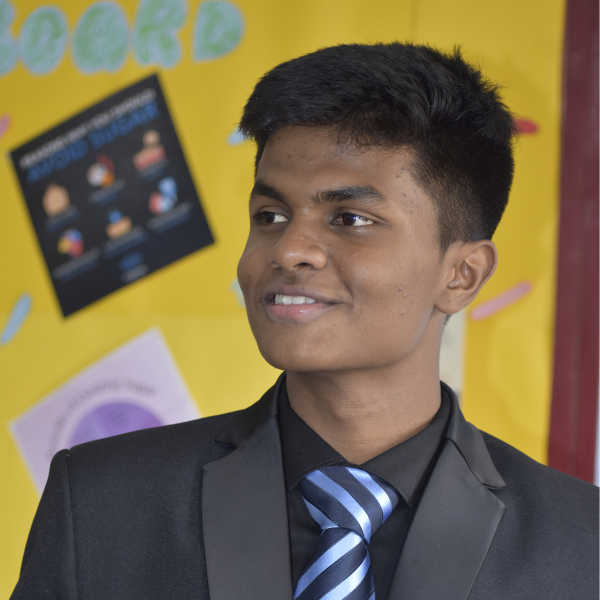
Deputy Secretary-General
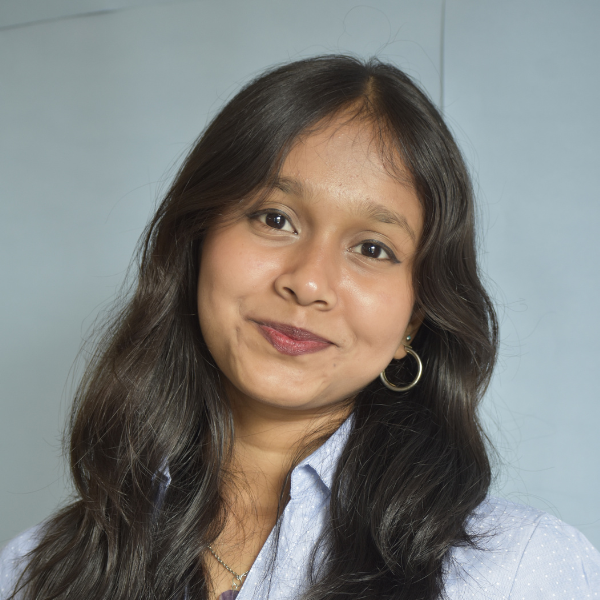
Head of Delegate Affairs
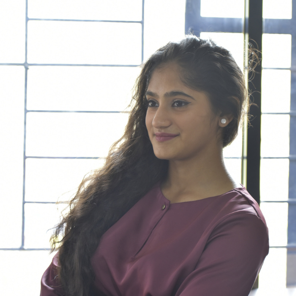
Chief of Staff
Head of Social Media
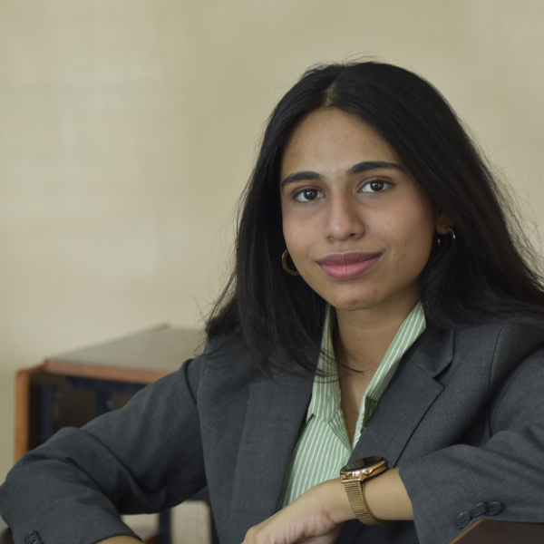
Head of Design
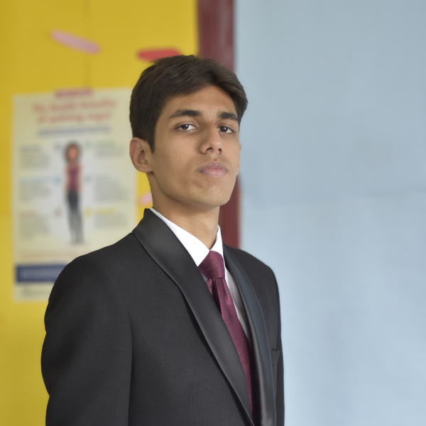
Head of Hospitality
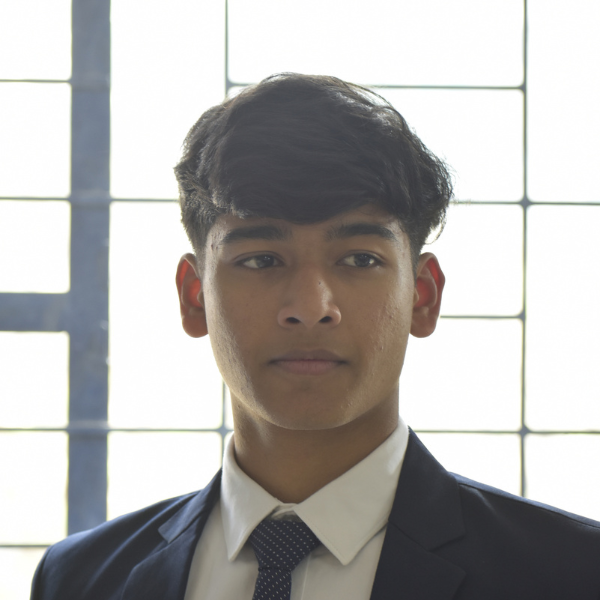
Head of Logistics
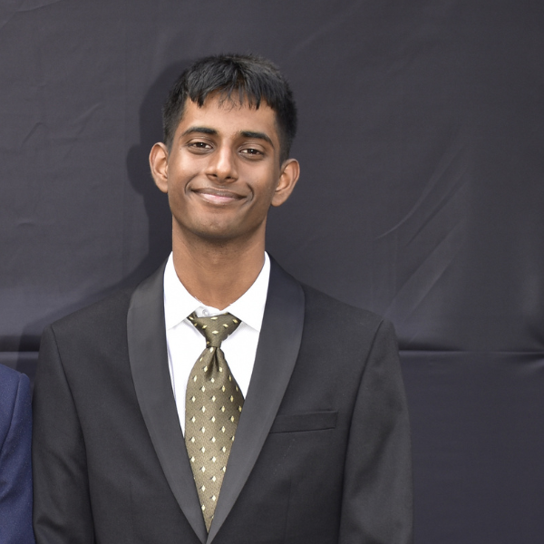
Head of Logistics
Head of Dance
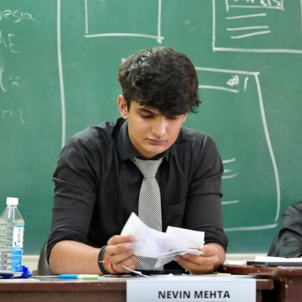
Nevin Mehta
Chairperson
Committed to continuous personal and professional growth, I draw creativity from literature and actively engage in public discourse to foster thoughtful dialogue and meaningful societal impact.
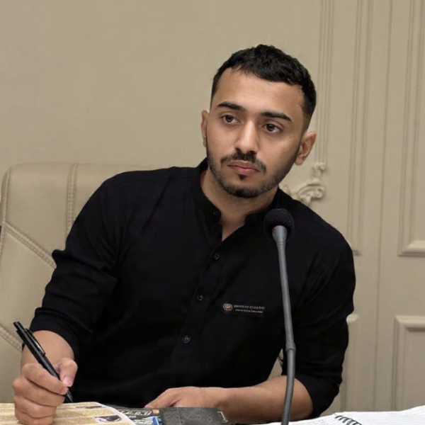
Nitish Sharma
Chairperson
Nitish Sharma is a final-year Pharmaceutical Science student with a strong passion for MUNs and research. An Official Journalist at India’s first NSRTC, he focuses on diabetes, cancer, and healthcare innovation, and is the founder of MIT-MED.
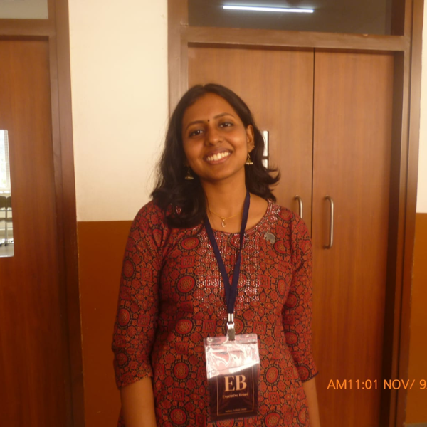
Niharika Baburaj
Vice-Chairperson
Niharika Baburaj has been an active MUNer for six years, viewing MUNs as a blend of diplomacy, research, and debate enriched by meaningful interaction. She believes they offer a unique chance to think from new perspectives and hopes to guide more individuals into MUNing.
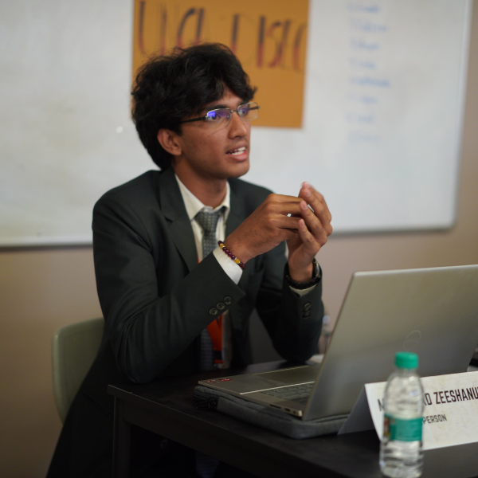
Mohd. Zeeshanul Haque
Chairperson
Zeeshan, a B.Tech CSE student from Pune and Bishop’s Undri alumnus, began his MUN journey in school. Passionate about debating and oration, he values diverse interests and embraces new experiences, learning from both successes and setbacks.
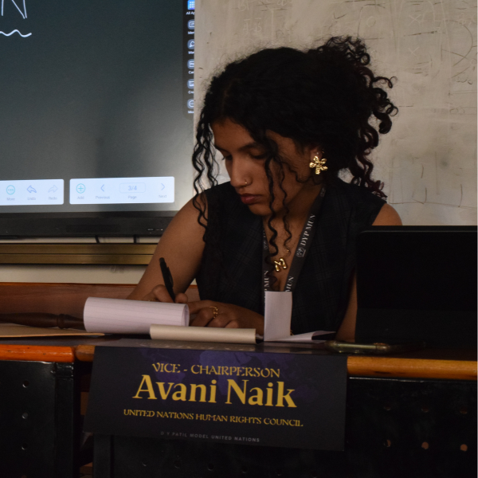
Avani Naik
Vice-Chairperson
Avani Naik is a commerce student with a keen interest in Fashion Law. With strengths in marketing, social media, public speaking, and design, she views every chairing experience as an opportunity to grow alongside her delegates.
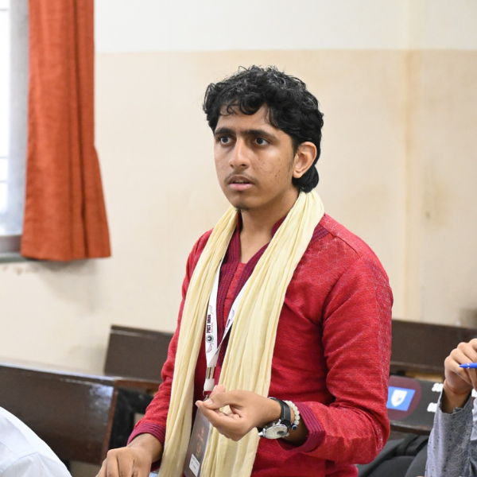
Rudra Khandge
Chairperson
Rudra is an ambitious student at Bliss International with over five years of MUN experience and multiple awards. A passionate orator and founder of his school’s debate club, he enjoys geopolitics, music, and engaging discussions.
Zohair Vadiwala
Vice-Chairperson
Meet Zohair Abbas Vadiwala, a Formula 1 enthusiast who values precision, strategy, and meaningful debate. Focused and driven, he fosters structured, inclusive discussions where delegates grow more confident and informed.
Suvir Arora
Vice-Chairperson
Suvir Arora, student at The Kalyani School, aspires to pursue law and is interested in international affairs. An extrovert, he enjoys debate, basketball. As Vice-Chairperson at TBSUMUN, he promotes a welcoming environment for delegates.

Rakeysh Gupta
Chairperson
Rakeysh, a second-year law student at Shankarrao Chavan Law College, brings five years and 50+ MUN conferences of experience. Passionate about diplomacy and global affairs, he also pursues Cyber Law, IPR, dance, and music.
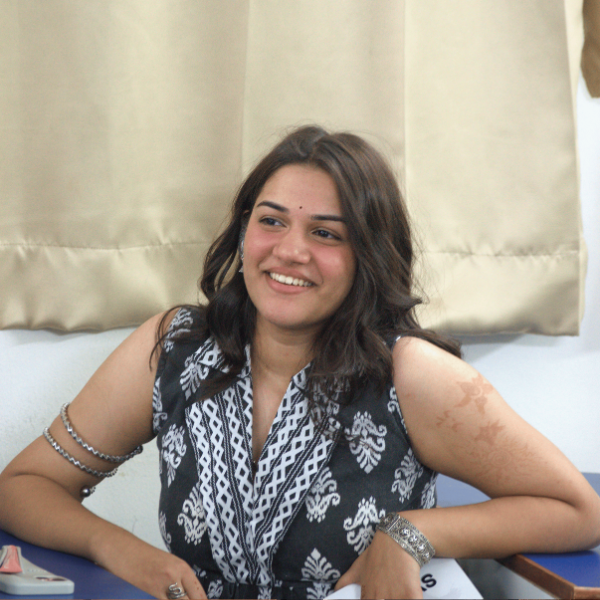
Anvee Prasad
Vice-Chairperson
Anvee is passionate about inclusive progress and geopolitics. Founder of the non-profit Embrace, she balances community service with theatre and a love for pop culture. As Vice Chair, she ensures engaging and solution- oriented debate.

Aarnaa Mehta
Chairperson
An economics student at Jai Hind College with interests in global governance and international relations. She has conducted MUN and policy-simulation trainings at institutions like IIT Bombay and participated in international dialogue programmes.
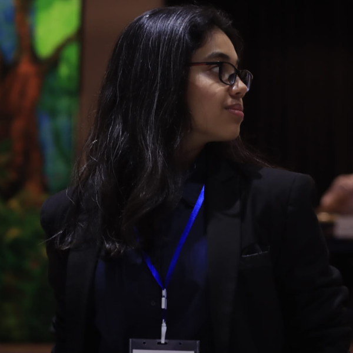
Arshi Saxena
Vice-Chairperson
Arshi is a science student passionate about research and creativity with over two years of MUN and debate experience. Having served as both delegate and secretariat, she brings strong critical thinking and persuasive skills.
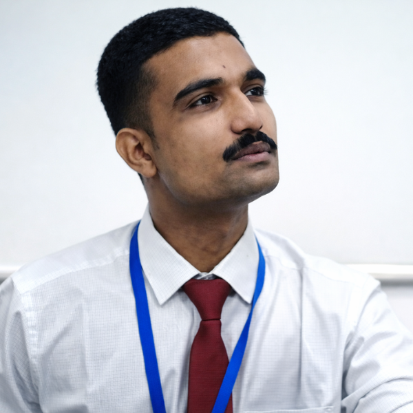
Omkar Handibag
Moderator
Final-year B.Tech IT student at VIIT Pune and Founder–Secretary-General of ZION Organisation, he is known for his leadership and procedural expertise. Passionate about research and diplomacy, he is also a poet and writer.
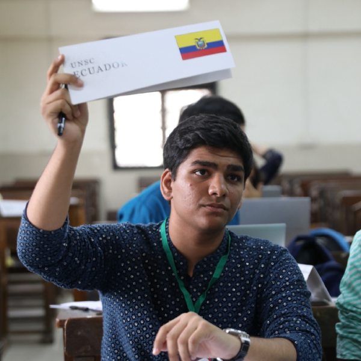
Ishaan Sonawane
Chairperson
With over seven years of MUN experience, including Harvard and GLC MUN, Ishaan Sonawane brings strong leadership and insight. A passionate football enthusiast, he looks forward to guiding a dynamic and engaging committee.

Rudra Patil
Chairperson
A Commerce student at Symbiosis College of Arts and Commerce with a strong interest in analytical thinking, international law and a finance student. With three years of experience in the Pune MUN circuit, he has developed an interest for fact-driven arguments.
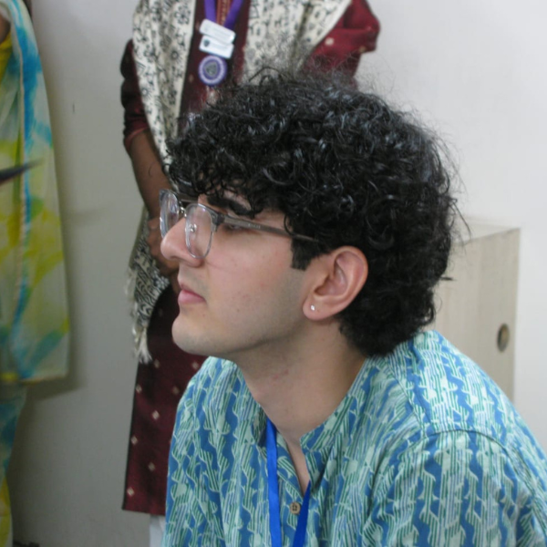
Siddhaarth Dhawan
Chairperson
Siddhaarth is a second-year Economics student at GIPE with over three years of MUN experience. Having served as EB member and Secretary-General, he values growth and policy discourse. A devoted Manchester United fan, he believes in resilience.
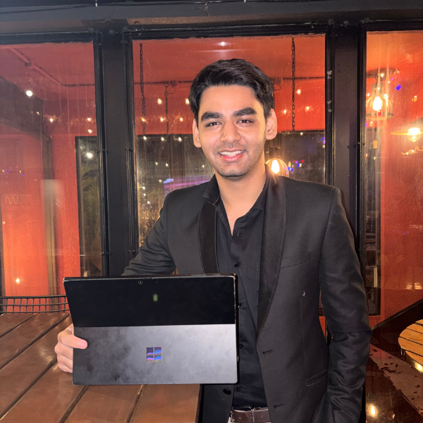
Ansh Vohra
Chairperson
Ansh Vora is a final-year Computer Engineering student at PICT with a strong interest in geopolitics. An avid debater and quiz enthusiast, he enjoys researching global issues and exploring new ideas.
Archita Shiledar
Head of Photography
Archita Shiledar is a final-year student at PICT, Pune, with a strong passion for photography. From covering college events to multiple MUN conferences where she has been awarded, she continues to grow creatively. Currently a Photography Intern at CamBunny Media.
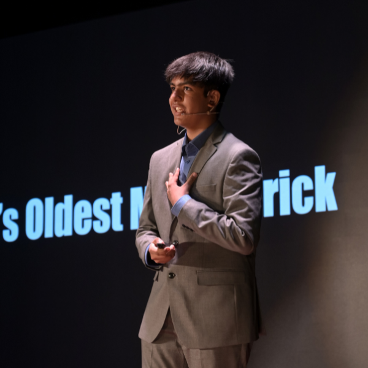
Rohan Sreekumar
Head of Journalism
Rohan is a humanities student with three years in the Pune MUN circuit and 20+ conferences of experience. A TEDx speaker and journalism enthusiast, he combines geopolitics with analytical reporting as Head of Journalism.

Athang Shinde
Chairperson
Athang Anandrao Shinde has 9 years of Model UN experience in Pune and Mumbai. He began his journey at The Bishop's School, Camp, co-founding its MUN society, and now studies law at Government Law College Mumbai while pursuing his passion for debating.

Soham Agrawal
Vice-Chairperson
A second-year Computer Science student at BITS Pilani, Soham Agrawal has been an active presence in the Pune MUN circuit since 2019, bringing with him a keen interest in well-structured, legally grounded geopolitical discourse.
DAYS
HOURS
MINUTES
SECONDS